전기공사기사 (2008-09-07 기출문제)
1과목: 전기응용 및 공사재료
1. 다음 중 일반적으로 휘도가 가장 높은 램프는?
- 백열전구
- 탄소 아크등
- 고압 수은등
- 형광등
(정답률: 70%)

2. 직류 전동기의 속도제어법에서 정출력 제어에 속하는 것은?
- .전압 제어법
- 계자 제어법
- 워드레오나드 제어법
- 전기자 저항 제어법
(정답률: 75%)
3. 반사율 41[%], 흡수율 23[%]의 종이의 투과율[%]은?
- 41
- 23
- 36
- 64
(정답률: 86%)
4. SCR의 특징을 설명한 것 중 맞지 않는 것은?
- 스위칭 소자이다.
- 대전류 제어 정류용을 이용된다.
- 아크가 생기며 열의 발생이 많다.
- turn-off 시간 및 순방향 전압 강하는 다이라트론보다 우수하다.
(정답률: 83%)
5. 어떤 열기관에 공급된 열량이 200[kcal]이고, 열기관에서 유효하게 이용된 열량이 140[kcal]일 때 열기관의 효율은 몇 [%] 인가?
- 60
- 70
- 80
- 90
(정답률: 86%)
6. 루소 선도가 그림과 같이 표시되는 광원의 하반구 광속은 약 몇 [lm] 인가? (단, 여기서 곡선 BC는 4분원 이다.)
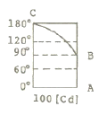
- 245
- 493
- 628
- 1120
(정답률: 79%)
7. 2종의 금속이나 반도체를 이용하여 열전대를 만들고 이때 생기는 열의 흡수, 발생을 이용한 전자냉동이 실용화되고 있다. 다음 중 어떤 현상을 이용한 것인가?
- 제벡(Seebeck) 효과
- 펠티에(Peltier) 효과
- 톰슨(Thomson) 효과
- 핀치(Pinch) 효과
(정답률: 86%)
8. 전자 빔(electron beam) 가열의 특징이 아닌 것은?
- 고융점 재료 및 금속박 재료의 용접이 쉽다.
- 에너지의 밀도나 분포를 자유로이 조절할 수 있다.
- 가열 범위가 극히 국한된 부분에 집중시킬 수 있어서 열에 의한 변질이 될 부분을 적게 할 수 있다.
- 진공 중에서의 가열이 불가능하다.
(정답률: 82%)
9. 전극에 저항물질이 생성되었을 때 이것을 극복해서 반응이 일어나기 위해 필요한 과전압을 무엇이라 하는가?
- 농도 과전압
- 천이 과전압
- 저항 과전압
- 결정화 과전압
(정답률: 85%)
10. 지상에 레버를 설치함으로써 열차가 신호를 무시하고 구내에 들어오면 열차의 비상 브레이크가 걸리도록 하는 장치는?
- ATC
- ATS
- ATO
- CTC
(정답률: 86%)
11. 3상4선식 Y접속시 전등과 동력을 공급하는 옥내배선의 경우는 상별 부하전류가 평형으로 유지되도록 상별로 결선하기 위하여 전압측 전선에 색별 배선을 하거나 색테이프를 감는 등의 방법으로 표시하려야 한다. 이때 B상의 색별 표시는?(관련 규정 개정전 문제로 여기서는 기존 정답인 2번을 누르면 정답 처리됩니다. 자세한 내용은 해설을 참고하세요.)
- 흑색
- 적색
- 청색
- 백색 또는 회색
(정답률: 72%)
12. 가연성 가스나 휘발성 가스가 발생할 우려가 있는 장소, 가연성 분체를 취급하는 장소 등의 위험장소에는 방폭형 조명기구를 사용하지 않으면 안된다. 방폭형 조명기구 중 램프를 내장하는 부분이 밀폐구조로서 외부의 폭발성 가스에 인회될 우려가 없는 구조는?
- 내압(耐壓) 방폭구조
- 안전증 방폭구조
- 본질안전 방폭구조
- 유입 방폭구조
(정답률: 72%)
13. 피뢰기 자체의 고장이 계통사고에 파급되는 것을 방지하기 위한 장치는?
- 디스콘넥터(Disconnector)
- 압소바(Absorber)
- 콘넥터(Connector)
- 어레스터(Arrester)
(정답률: 87%)
14. 전선 재료로서 구비할 조건 중 틀린 것은?
- 도전율이 클 것
- 접속이 쉬울 것
- 내식성이 작을 것
- 가요성이 풍부할 것
(정답률: 90%)
15. 다음 전지 중 물리 전지에 속하는 것은?
- 열전지
- 수은전지
- 산화은전지
- 연료전지
(정답률: 83%)
16. 절연 재료의 구비 조건이 아닌 것은?
- 절연 저항이 클 것
- tan δ가 클 것
- 유전체 손실이 작을 것
- 기계적 강도가 클 것
(정답률: 86%)
17. 다음 중 단로기의 구조에서 관계가 없는 것은?
- 플레이트
- 리클로저
- 베이스
- 핀치
(정답률: 89%)
18. 금속의 물리적 성질 중 체적고유저항(μΩ-cm, 20℃)이 가장 큰 금속은?
- 알루미늄
- 구리
- 철
- 납
(정답률: 65%)
19. 다음 중 보호 계전기가 아닌 것은?
- OCR
- DGR
- UVR
- CLR
(정답률: 88%)
20. 급속 전선관용 부품 중 복스에 금속관을 고정할 때 사용하는 것은?
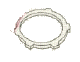
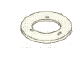
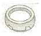
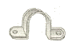
(정답률: 60%)
2과목: 전력공학
21. 무효전력 흡수 능력면에서 동기조상기가 전력용 콘덴서보다 유리한 점으로 가장 알맞은 것은?
- 필요에 따라 용량을 수시로 변경할 수 있다.
- 진상전류 이외에 지상전류를 취할 수 있다.
- 전력손실이 적다.
- 선로의 유도리액턴스를 보상하여 전압강하를 줄인다.
(정답률: 13%)
22. 송전선의 통신선에 대한 유도장해 방지대책이 아닌 것은?
- 전력선과 통신선과의 상호인덕턴스를 크게 한다.
- 전력선의 연가를 충분히 한다.
- 고장 발생시의 지락전류를 억제하고, 고장구간을 빨리 차단한다.
- 차폐선을 설치한다.
(정답률: 12%)
23. 다음 중 배전선로의 손실 경감과 관계가 없는 것은?
- 배전 전압의 승압
- 다중접지방식채용
- 역률 개선
- 부하의 불평형 방지
(정답률: 13%)
24. 10kW, 역률 0.8(뒤짐)인 부하를 역률 0.95(뒤짐)로 개선하는데 필요한 전력용콘덴서의 용량은 약 몇 [kVA] 인가?
- 22
- 32
- 42
- 52
(정답률: 8%)
25. 그림과 같은 66kV 선로의 송전전력이 20000kW, 역률이 0.8[lag]일 때 a상에 완전 지락사고가 발생하였다. 지락계전기 DG에 흐르는 전류는 약 몇 [A]인가? (단, 부하의 정상, 역상임피던스 및 기타 정수는 무시 한다.)
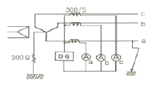
- 2.1
- 2.9
- 3.7
- 5.5
(정답률: 8%)
26. 60Hz, 154kV, 길이 100km인 3상 송전선로에서 1선의 대지 정전용량 Cs=0.0⑤μF/km, 선간 상호정전용량 Cm=0.0014μF/km 일 때 1선에 흐르는 충전전류는 약 몇 [A] 인가?
- 21
- 31
- 37
- 53
(정답률: 9%)
27. 발전기의 부하가 불평형이 되어 발전기의 회전자가 과열 소손되는 것을 방지하기 위해 설치하는 계전기는?(오류 신고가 접수된 문제입니다. 반드시 정답과 해설을 확인하시기 바랍니다.)
- 과전압계전기
- 계자상실계전기
- 비율차동계전기
- 과전류계전기
(정답률: 3%)
28. 화력발전소에서 절탄기(節炭器)의 용도는?
- 보일러에 공급되는 급수를 예열한다.
- 포화증기를 과열한다.
- 연소용 공기를 예열한다.
- 석탄을 건조한다.
(정답률: 12%)
29. 다음 중 송전선로의 코로나 임계전압이 높아지는 경우가 아닌 것은?
- 날씨가 맑다.
- 상대공기밀도가 작다.
- 기압이 높다.
- 전선의 반지름과 선간거리가 크다.
(정답률: 12%)
30. 유효낙차 100m, 최대 유량 20m3/s 의 수차에서 낙차가 81m로 감소하면 유량은 몇 [m3/s]가 되겠는가? (단, 수차 안내날개의 열림은 불변이라고 한다.)
- 15
- 18
- 24
- 30
(정답률: 6%)
31. 3상 배전선로의 말단에 역률80%(lag)인 평형 3상의 집중 부하가 있다. 변전소 인출구의 전압이 3300V일 때 부하의 단자전압을 최소 3000V로 유지하려면 부하전력은 약 몇 [kW]까지 허용할 수 있는가? (단, 전선 1선의 저항을 2Ω, 리액턴스를 1.8Ω이라 하고 그 밖의 선로정수는 무시한다.)
- 156
- 269
- 367
- 487
(정답률: 6%)
32. 직류 송전에 대한 설명으로 옳지 않은 것은?
- 직류 송전에서는 유효전력과 무효전력을 동시에 보낼수 있다.
- 역률이 항상 1로 되기 때문에 그 만큼 송전 효율이 좋아 진다.
- 직류 송전에서는 리액턴스라든지 위상각에 대해서 고려할 필요가 없기 때문에 안정도상의 난점이 없어진다.
- 직류에 의한 계통 연계는 단락용량이 증대하지 않기 때문에 교류 계통의 차단용량보다 작아도 된다.
(정답률: 8%)
33. 전자계산기에 의한 전력조류 계산에서 슬랙(slack)모선의 지정값은? (단, 슬랙모선을 기준모선으로 한다.)
- 유효전력과 무효전력
- 모선 전압의 크기와 유효전력
- 모선 전압의 크기와 무효전력
- 모선 전압의 크기와 모선 전압의 위상각
(정답률: 8%)
34. 다음 중 원자력발전소에서 감속재로 사용되지 않는 것은?
- 경수
- 중수
- 흑연
- 카드뮴
(정답률: 11%)
35. 다음 중 단로기에 대한 설명으로 바르지 못한 것은?
- 선로로부터 기기를 분리, 구분 및 변경할 때 사용되는 개폐기구로 소호 기능이 없다.
- 충전 전류의 개폐는 가능하나 부하 전류 및 단락 전류의 개폐 능력을 가지고 있지 않다.
- 부하측의 기기 또는 케이블 등을 점검할 때에 선로를 개방하고 시스템을 절환하기 위해 사용된다.
- 차단기와 직렬로 연결되어 전원과의 분리를 확실하게 하는 것으로 차단기 개방 후 단로기를 열고 차단기를 닫은 후 단로기를 닫아야 한다.
(정답률: 9%)
36. 송전선로의 송전용량을 결정할 때 송전용량계수법에 의한 수전전력(kW)을 나타낸 식으로 알맞은 것은? (단, 수전단선간전압은 kV 이고, 송전거리는 km 이다.)
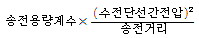
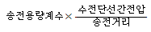
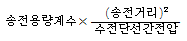
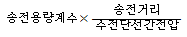
(정답률: 11%)
37. 어떤 고층건물의 부하 총 설비전력이 800kW이고, 수용률이 0.5이며, 역률이 0.8(뒤짐)일 때 이 건물의 변전시설용량의 최저값은 몇 [kVA]인가?
- 350
- 500
- 750
- 900
(정답률: 12%)
38. 차단기의 고속도 재폐로의 목적으로 가장 알맞은 것은?
- 고장의 신속한 제거
- 안정도 향상
- 기기의 보호
- 고장전류 억제
(정답률: 11%)
39. 수전단을 단락한 경우 송전단에서 본 임피던스가 300Ω이고, 수전단을 개방한 경우 송전단에서 본 어드미턴스가 1.875×10-3℧일 때, 이 송전선이 특성임피던스는 몇 [Ω]인가?
- 200
- 300
- 400
- 500
(정답률: 10%)
40. 통신성과 병행인 60Hz의 3상 1회선 송전선에서 1선 지락으로 110A의 영상 전류가 흐르고 있을 때 통신선에 유기되는 전자 유도전압은 약 몇 [V]인가? (단, 영상전류는 송전선 전체에 걸쳐 같은 크기이고, 통신선과 송전선의 상호 인덕턴스는 0.⑤mH/km 이고, 양선로의 병행 길이는 55km 이다.)
- 252
- 293
- 342
- 365
(정답률: 8%)
3과목: 전기기기
41. 변압기의 등가회로 작성을 하기 위한 시험 중 무부하시험으로 알 수 있는 것은?
- 어드미턴스, 철손
- 임피던스전압, 임피던스와트
- 권선의 저항, 임피던스전압
- 철손, 임피던스와트
(정답률: 13%)
42. 다음 중 가정용 재봉틀, 소형공구, 영사기, 치과의료용, 엔진 등에 사용하고 있으며, 교류, 직류, 양쪽 모두에 사용되는 만능 전동기는?
- 3상 유도 전동기
- 차동 복권 전동기
- 단상 직권 정류자 전동기
- 전기 동력계
(정답률: 11%)
43. 3상 권선형 유도 전동기의 전부하 슬립 5[%], 2차 1상의 저항 0.5[Ω] 이다. 이 전동기의 기동토크를 전부하 토크와 같도록 하려면 외부에서 2차에 삽입할 저항은 몇 [Ω]인가?
- 10
- 9.5
- 9
- 8.5
(정답률: 12%)
44. 변류비 100/5[A]의 변류기(C.T)와 5[A]의 전류계를 사용해서 부하전류를 측정한 경우 전류계의 지시가 4[A] 이었다. 이 때 부하전류는 몇 [A]인가?
- 20
- 30
- 60
- 80
(정답률: 11%)
45. 직류 분권 전동기의 보극은 무엇 때문에 쓰이는가?
- 회전수 일정
- 브러시의 접촉저항 감소
- 정류 양호
- 시동 토크(torque)의 증가
(정답률: 15%)
46. 3000[V], 60[Hz], 8극 100[kW]의 3상 유도 전동기가 있다. 전부하에서 2차 구리손이 3[kW], 기계손이 2[kW] 이라면 전부하 회전수는 약 몇 [rpm] 인가?
- 498
- 593
- 874
- 984
(정답률: 12%)
47. 단상변압기의 병렬운전 조건이 아닌 것은?
- 극성이 같아야 한다.
- 권수비가 같아야 한다.
- 백분율 저항강하 및 리액턴스강하는 같지 않아도 된다.
- 1차 및 2차의 정격전압이 같아야 한다.
(정답률: 14%)
48. 변압기의 부하전류 및 전압이 일정하고, 주파수가 낮아졌을 때의 현상으로 옳은 것은?
- 철손 감소
- 철손 증가
- 동손 감소
- 동손 증가
(정답률: 10%)
49. 직류 분권 전동기가 있다. 단자 전압 215[V], 전기자 전류 150[A], 1500[rpm]으로 운전되고 있을 때 발생 토크 [Nㆍm]는 약 얼마인가? (단, 전기자 저항은 0.1[Ω]이다.)
- 19.5
- 22.4
- 191
- 220
(정답률: 7%)
50. 단상 반파 정류로 직류전압 100[V]를 얻으려고 한다. 최대 역전압(Peak inverse voltage) 즉 PIV는 몇 [V]이상의 다이오드를 사용해야 하는가?
- 100
- 156
- 223
- 314
(정답률: 10%)
51. 동기전동기에서 출력이 100[%]일 때의 역률이 1이 되도록 계자전류를 조정한 다음에 공급전압 V 및 계자전류 If를 일정하게 하고, 전부하 이하에서 운전하면 동기전동기의 역률은 어떻게 되는가?
- 뒤진 역률이 되고, 부하가 감소함에 따라 역률은 낮아진다.
- 뒤진 역률이 되고, 부하가 감소함에 따라 역률은 좋아진다.
- 앞선 역률이 되고, 부하가 감소함에 따라 역률은 낮아진다.
- 앞선 역률이 되고, 부하가 감소함에 따라 역률은 좋아진다.
(정답률: 10%)
52. 3300[V], 60[Hz]용 변압기의 와류손이 360[W]이다. 이 변압기를 2750[V], 50[Hz]에서 사용할 때 이변압기의 와류손은 약 몇 [W]가 되는가?
- 200
- 225
- 250
- 275
(정답률: 9%)
53. 3상 유도전동기에서 2차측 저항을 2배로 하면 그 최대 토크는 어떻게 되는가?
- 2배로 된다.
- 1/2로 줄어든다.
- √2배가 된다.
- 변하지 않는다.
(정답률: 13%)
54. 다음 중 DC 서보 모터의 회전 전기자 구조가 아닌 것은?
- 슬롯(Slot)이 있는 전기자
- 철심이 있고 슬롯(Slot)이 없는 전기자
- 철심이 없는 평판상 프린트 코일형
- 전기자 권선이 없는 돌극형
(정답률: 10%)
55. 단상전파 정류회로의 정류효율은?
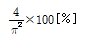
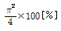
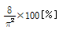
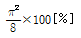
(정답률: 7%)
56. 직류전동기의 규약효율은?
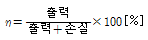
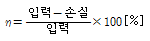
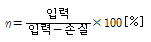
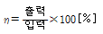
(정답률: 11%)
57. 4극 60[Hz]의 3상 유도전동기가 1500[rpm]으로 회전하고 있을 때 회전자 전류의 주파수는 약 몇 [Hz]인가?
- 8
- 10
- 12
- 14
(정답률: 10%)
58. 단상 유도전동기의 기동에 브러시를 필요로 하는 것은?
- 분상 기동형
- 반발 기동형
- 콘덴서 분상 기동형
- 세이딩 코일 기동형
(정답률: 15%)
59. 무부하 전압 220[V], 정격 전압 200[V]인 발전기의 전압 변동률[%]은?
- 10
- 20
- 30
- 40
(정답률: 11%)
60. 동기 발전기의 권선을 분포권으로 하면?
- 기전력의 고조파가 감소하여 파형이 좋아진다.
- 권선의 리액턴스가 커진다.
- 집중권에 비하여 합성 유도 기전력이 높아진다.
- 난조를 방지한다.
(정답률: 11%)
4과목: 회로이론 및 제어공학
61. R=5[Ω], L=20[mH] 및 가변 콘덴서 C로 구성된 R-L-C 직렬 회로에 주파수 1000[Hz]인 교류를 가한 다음 C를 가변시켜 직영 공진시킬 때 C의 값은 약 몇 [μF]인가?
- 1.27
- 2.54
- 3.52
- 4.99
(정답률: 6%)
62. 다음의 3상 교류 대칭 전압 중에 포함되는 고조파에서 상순이 기본파와 같은 것은?
- 제3고조파
- 제5고조파
- 제7고조파
- 제9고조파
(정답률: 8%)
63. 불평형 3상 전류가 I a=16+j2[A], Ib=-20j9[A], Ic=-2+j10[A]일 때 영상분 전류 [A]는?
- -2+j
- -6+j3
- -9+j6
- -18+j9
(정답률: 10%)
64. i=40sin⍵t+30sin(3⍵t+45°)의 실효값은 몇 [A]인가?
- 25
- 25√2
- 35√2
- 50
(정답률: 7%)
65. 그림과 같은 회로의 2단자 임피던스 Z(S)는? (단, s=j⍵ 이다.)
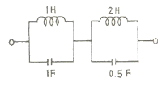
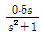
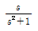
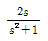
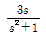
(정답률: 4%)
66. 그림에서 단자 a, b에 나타나는 전압은 얼마인가?
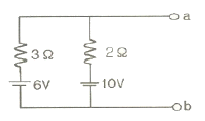
- 6
- 8.4
- 10
- 16
(정답률: 6%)
67. 분포 정수 회로에서 선로 정수가 R, L, C, G이고 무왜 조건이 RC=GL과 같은 관계가 성립될 때 선로의 특성 임피던스 Z0는?
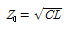
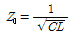
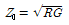
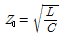
(정답률: 8%)
68. 회로에서 정전용량 C는 초기전하가 없었다. 지금 t=0 에서 스위치 K를 닫았을 때 t=0+에서의 i(t)값은?
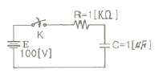
- 0.1[A]
- 0.2[A]
- 0.4[A]
- 1[A]
(정답률: 10%)
69.
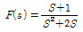
로 주어졌을 때 F(s)의 역변환을 한 것은?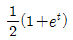
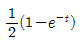
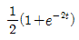
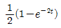
(정답률: 9%)
70. 1[mV]의 입력 인가시 0.1[V]의 출력이 나오는 4단자 회로의 이득은 몇 [dB]인가?
- 10
- 20
- 30
- 40
(정답률: 6%)
71. 그림은 무엇을 나타낸 논리 연산 회로인가?
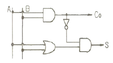
- NAND 회로
- Exclusive OR 회로
- Half-adder 회로
- Full-adder 회로
(정답률: 8%)
72. 다음 설명 중 옳지 않은 것은?
- S평면의 우측면은 Z평면의 원점에 중심을 둔 단위원내부로 사상 된다.
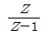
에 대응되는 라플라스 변환함수는 1/S이다.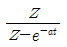
에 대응되는 시간함수는 e-at이다.- e(t)의 초기값은 e(t)의 Z변환을 E(z)라 할 때
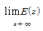
이다.
(정답률: 5%)
73. Z변환법을 사용한 샘플치 제어계가 인정되려면 1+GH(Z)=0의 근의 위치는?
- Z평면의 좌반면에 존재하여야 한다.
- Z평면의 우반면에 존재하여야 한다.
- |Z| = 1인 단위 원내에 존재하여야 한다.
- |Z| = 1인 단위 원밖에 존재하여야 한다.
(정답률: 11%)
74. 루우스 안정판별표에서 수열의 최좌열이 다음과 같을 때 이 계통의 특성 방정식에는 양의 근 또는 양의 실수부를 갖는 근이 몇 개 있는가?
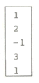
- 전혀 없다.
- 1개 있다.
- 2개 있다.
- 3개 있다.
(정답률: 11%)
75. 2차계의 주파수 응답과 시간 응답간의 관계이다. 잘못된 것은?
- 안정된 제어계에서 높은 대역폭은 큰 공진 첨두치와 대응된다.
- 최대 오버슈트와 공진첨두치는 ζ(감쇠율)만의 함수로 나타낼 수 있다.
- ωn가 일정시 ζ가 증가하면 상승시간과 대역폭은 증가한다.
- 대역폭은 0주파수 이득보다 3[dB] 떨어지는 주파수로 정의된다.
(정답률: 6%)
76. 다음과 같은 특성방정식이 있을 때 근궤적의 가지수는?
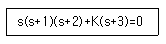
- 6
- 5
- 4
- 3
(정답률: 7%)
77. 그림과 같은 회로망은 어떤 보상기로 사용될 수 있는가?
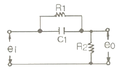
- 지연 보상기
- 지ㆍ진상 보상기
- 지상 보상기
- 진상 보상기
(정답률: 14%)
78. 다음 그림 중 ⓛ에 알맞은 신호는?
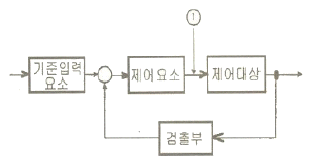
- 기준입력
- 동작신호
- 조작량
- 제어량
(정답률: 6%)
79.
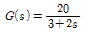
인 요소에서 ω=2인 정현파를 주었을 때 G(jω) 와 ∠G(jω)를 구하면?- 4, 53°
- 4, -53°
- -4, 53°
- -4, -53°
(정답률: 8%)
80. ω가 0에서 ∞까지 변화하였을 때 G(jω)의 크기와 위상각을 극좌표에 그린 것으로 이 궤적을 표시하는 선도는?
- 근궤적도
- 나이퀴스트선도
- 니콜스선도
- 보드선도
(정답률: 9%)
5과목: 전기설비기술기준 및 판단기준
81. 최대사용전압 23000V의 3상4선식 중성선 다중접지식 전로와 대지 사이의 절연내력시험전압은 몇 [V] 인가?
- 21160
- 25300
- 28750
- 34500
(정답률: 12%)
82. 사용전압 66000V인 특별고압 가공전선에 고압 가공전선을 동일 지지물에 시설하는 경우 특별고압 가공선로의 보안 공사로 알맞은 것은?
- 고압보안공사
- 제1종 특별고압 보안공사
- 제2종 특별고압 보안공사
- 제3종 특별고압 보안공사
(정답률: 9%)
83. 전로에 시설하는 400V 이상의 저압용 기계기구의 철대 및 금속제 외함에는 제 몇 종 접지공사를 하여야 하는가?
- 제1종 접지공사
- 제2종 접지공사
- 제3종 접지공사
- 특별 제3종 접지공사
(정답률: 10%)
84. 제1종 접지공사의 접지저항값은 몇 [Ω] 이하로 유지하여야 하는가?
- 10
- 30
- 50
- 100
(정답률: 12%)
85. 제3종 접지공사 및 특별 제3종 접지공사의 접지선으로 연동선을 사용할 때 그 굵기는 지름이 몇 [mm] 이상 이어야 하는가?(관련 규정 개정전 문제입니다. 정답은 3번이었습니다. 자세한 내용은 해설을 참고하세요.)
- 0.75
- 1.25
- 1.6
- 2.6
(정답률: 13%)
86. 폭발성 또는 연소성의 가스가 침입할 우려가 있는 것에 시설하는 지중함으로서 그 크기가 몇 [m3]이상인 것에는 통풍장치 기타 가스를 방산시키기 위한 적당한 장치를 시설하여야 하는가?
- 0.5
- 0.75
- 1.0
- 2.0
(정답률: 13%)
87. 저압 옥내배선의 사용전압이 400V 미만인 경우에는 금속제 트레이에 몇 종 접지공사를 하여야 하는가?
- 제1종 접지공사
- 제2종 접지공사
- 제3종 접지공사
- 특별 제3종 접지공사
(정답률: 13%)
88. 저압가공 전선로와 기설 가공약전류전선로가 병행하는 경우에는 유도작용에 의하여 통신상의 장해가 생기지 아니하도록 전선과 기설 약전류 전선간의 이격 거리는 몇 [m] 이상 이어야 하는가?
- 1.0
- 2.0
- 2.5
- 4.5
(정답률: 5%)
89. 옥상 전선로에 대한 내용 중 옳지 않은 것은?
- 저압 옥상전선로의 전선은 인장강도 2.3kN 이상의 것 또는 지름 2.6mm 이상의 경동선이어야 한다.
- 고압 옥상전선로의 전선은 상시 부는 바람 등에 의하여 식물에 접촉하지 않도록 시설한다.
- 고압 옥상전선로의 전선이 가공전선을 제외한 다른시설물과 접근하는 경우 60cm 이상 이격하여야 한다.
- 특별고압의 인입선의 옥상부분을 제외한 특별고압 옥상 전선로는 케이블을 사용하여 시설한다.
(정답률: 7%)
90. 전자 개폐기의 조작회로 또는 초인벨ㆍ경보벨 등에 접속하는 전로로서 최대 사용전압이 몇 [V] 이하인 것으로 대지전압이 300V 이하인 강전류 전기의 전송에 사용하는 전로와 변압기로 결합되는 것을 소세력회로라 하는가?
- 60
- 80
- 100
- 150
(정답률: 7%)
91. 다음 중 철도ㆍ궤도 또는 자동차도 전용 터널 안의 전선로의 시설 중에서 기준에 적합하지 않은 것은?
- 저압 전선으로 지름 2.0mm의 경동선의 절연전선을 사용 하였다.
- 저압 전선으로 지름 인장강도 2.30kN이상의 절연전선을 사용 하였다.
- 저압 전선을 애자사용 공사에 의하여 시설하고 이를 노면상 2.5m 이상의 높이로 하였다.
- 저압 전선을 가요전선관 공사에 의하여 시설하였다.
(정답률: 7%)
92. 직류식 전기철도에서 가공으로 시설하는 배류선은 케이블인 경우 이외에는 지름 3.5mm 이상의 동복 강선 또는 지름이 몇 [mm]의 경동선이나 이와 동등 이상의 세기 및 굵기의 것 이어야 하는가?
- 2.0
- 2.6
- 3.5
- 4.0
(정답률: 8%)
93. 금속덕트공사에 의한 저압 옥내배선의 시설방법으로 적합하지 않은 것은?
- 금속 덕트에 넣은 전선의 단면적의 합계가 덕트 내부 단면적의 20% 이하가 되게 하였다.
- 전선은 옥외용 비닐절연전선을 제외한 절연전선을 사용하였다.
- 덕트를 조영재에 붙이는 경우, 덕트의 지지점간의 거리를 7m로 견고하게 붙였다.
- 저압 옥내배선의 사용전압이 380V이어서 덕트에 제3종 접지공사를 하였다.
(정답률: 15%)
94. 가공전선로의 지지물에 시설하는 첨가 통신선과 저압가공전선사이의 이격거리는 몇 [cm] 이상이어야 하는가? (단, 저압가공전선은 절연전선이고, 통신선은 절연전선과 동등이상의 절연효력이 있다고 한다.)
- 30
- 40
- 50
- 60
(정답률: 8%)
95. 발전기 등의 보호장치의 기준과 관련하여 발전기를 자동적으로 전로로부터 차단하는 장치를 시설하여야 하는 경우로 알맞은 것은?
- 발전기에 과전류가 생긴 경우
- 발전기에 역상전류가 생긴 경우
- 발전기의 전류에 고조파가 포함된 경우
- 발전기의 자기여자 현상으로 이상전압이 생긴 경우
(정답률: 10%)
96. 다음 ( )안에 들어갈 내용으로 알맞은 것은?
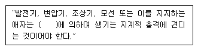
- 정격전류
- 단락전류
- 과부하전류
- 최대 사용전류
(정답률: 13%)
97. 가공전선로에 사용하는 지지물의 강도계산에 적용하는 갑종풍압하중은 지지물이 목주, 원형철주, 원형철근콘크리트주인 경우 구성재의 수직투영면적 1m2에 대하여 몇 [Pa] 의 풍압을 기포로 하여 계산하는가?
- 588
- 882
- 1117
- 1255
(정답률: 10%)
98. 저고압 가공전선의 시설 기준으로 옳지 않은 것은?
- 사용전압 400[V]미만인 저압가공전선은 2.6mm 이상의 절연전선을 사용하여 시설할 수 있다.
- 사용전압 400[V]미만인 저압가공전선으로 다심형 전선을 사용하는 경우 3종 접지를 한 조가용선으로 사용하여야 한다.
- 사용전압 400[V]이상의 저압가공전선으로 다심형 전선을 사용하는 경우 3종 접지를 한 조가용선으로 사용하여야 한다.
- 사용전압 400[V]미만인 고압가공전선을 시외에 가설하는 경우 지름 4mm 이상의 경동선을 사용하여야 한다.
(정답률: 8%)
99. 사용전압 154000V의 가공전선을 시가지에 시설하는 경우 전선이 지표상의 높이는 최소 몇 [m] 이상이어야 하는가?
- 7.44
- 9.44
- 11.44
- 13.44
(정답률: 8%)
100. 발전소에서 개폐기 또는 차단기에 시설하는 공기압축기는 최고 사용 압력의 몇 배의 수압을 연속하여 10분간 가하였을 때 이에 견디고 새지 아니하여야 하는가?
- 1.1배
- 1.25배
- 1.5배
- 2배
(정답률: 8%)